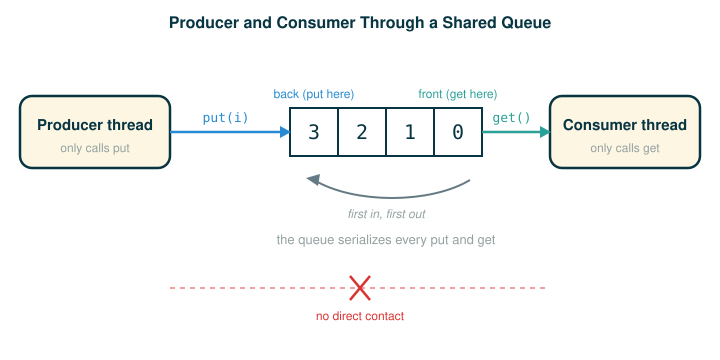

4.8.4 Synchronized Data Structures
In the previous lessons you saw the danger of shared mutable state: when two threads touch the same data at the same time, updates can be lost and the program can behave differently from run to run. You also saw that writing the low-level locking by hand is fiddly and easy to get wrong.
This lesson gives you a way to sidestep most of that work. By the end of it you will be able to do four things: describe the producer and consumer pattern that shows up everywhere in parallel programs, use Python's queue.Queue to hand work safely from one thread to another, read each of the four queue operations (put, get, task_done, join) one token at a time and say exactly what it does, and trace by hand how a producer thread and a consumer thread cooperate through a shared queue without ever corrupting it.
The big idea is this: instead of sharing raw data and guarding it yourself, you share a data structure that already knows how to guard itself.
A Staffed Pickup Window
Picture a busy pickup window at the back of a warehouse. Many people walk up wanting their packages, and many delivery drivers walk up dropping packages off. They never reach into the storage room themselves. They talk to the clerk at the window, and the clerk handles exactly one person at a time.
Two things happen because of that window. First, nobody collides inside the storage room, because nobody goes inside. Every drop-off and every pickup passes through the single clerk, one at a time. Second, neither side has to coordinate with the other directly. A driver dropping off a package does not have to find the right customer; they hand it to the clerk. A customer does not have to flag down a specific driver; they ask the clerk. The window is the meeting point, and the clerk is the rule that keeps it orderly.
A synchronized queue is that window. Threads put work into the queue and take work out of the queue, and the queue itself plays the role of the clerk: it serializes access so the shared storage stays consistent, no matter how the threads happen to be scheduled.
The Producer and Consumer Pattern
A very common shape in parallel programs splits the work into two roles.
A producer creates work items and places them somewhere. A consumer takes work items from that somewhere and processes them. The two roles run at the same time and at their own pace. A producer might rush ahead and create many items before the consumer has touched any; a consumer might drain everything and then sit idle waiting for more.
The hard part is coordination, and it has two failure modes you want to avoid:
| Coordination problem | What goes wrong without help |
|---|---|
| The consumer outruns the producer | The consumer tries to take an item when none exists and crashes or reads garbage. |
| The two sides clash on shared storage | Concurrent additions and removals corrupt the underlying data structure. |
A queue is exactly the right shape for this pattern, because it reduces each side to one decision. The producer only ever calls put. The consumer only ever calls get. Neither side inspects the other's internal state, and neither side holds a lock by hand. The queue quietly solves three coordination problems at once: it orders items first in, first out; it makes a consumer wait when the queue is empty instead of failing; and it serializes concurrent put and get calls so the internal storage never tears.

Python's Synchronized Queue
The simplest way to synchronize shared data is to reach for a data structure whose operations are already synchronized for you. Python's queue module provides a Queue class that gives synchronized first-in, first-out access to data. The put method adds an item to the queue, and the get method retrieves an item. The class itself guarantees that these methods are synchronized, so items are never lost no matter how the thread operations are interleaved.
You create one with no arguments:
# (1)
from queue import Queue
queue = Queue()
Notice the capitalization. The module is the lowercase queue, and the class inside it is the capitalized Queue. After this runs, the name queue refers to a fresh, empty, thread-safe queue object that any number of threads may share.
Following the Line: The Queue Operations
Four methods carry the whole pattern. Read each one as a single line of code, token by token, and notice what action it performs.
The producer adds an item to the back of the queue:
# (2)
queue.put(i)
queue.put(i)
├─ queue ....... the shared synchronized queue object
├─ . ........... reach for one of the queue's methods
├─ put ......... the method that adds one item to the back, safely
├─ ( ........... begins the inputs to put
├─ i ........... the work item being added this time
├─ ) ........... ends the inputs
└─ action ...... i is placed into the queue; the count of unfinished tasks rises by oneThe consumer takes the next available item:
# (3)
queue.get()
queue.get()
├─ queue ....... the shared synchronized queue object
├─ . ........... reach for one of the queue's methods
├─ get ......... the method that removes and returns the front item
├─ ( ........... begins the inputs (there are none)
├─ ) ........... ends the inputs
└─ action ...... if an item exists, remove and return it; if the queue is empty, wait here until one arrivesThe key fact about get is in that final row: it does not peek. It removes the item it returns, and if there is nothing to return, it blocks the calling thread until there is. That blocking is what keeps the consumer from crashing when it briefly outruns the producer.
After the consumer finishes working on an item, it reports completion:
# (4)
queue.task_done()
queue.task_done()
├─ queue ........... the shared synchronized queue object
├─ . ............... reach for one of the queue's methods
├─ task_done ....... the method that signals one item is fully processed
├─ ( ............... begins the inputs (there are none)
├─ ) ............... ends the inputs
└─ action .......... the queue's count of unfinished tasks drops by oneAnd the producer (here, the main thread) waits for all of that work to finish:
# (5)
queue.join()
queue.join()
├─ queue ....... the shared synchronized queue object
├─ . ........... reach for one of the queue's methods
├─ join ........ the method that blocks until every put item has been marked done
├─ ( ........... begins the inputs (there are none)
├─ ) ........... ends the inputs
└─ action ...... wait here until the count of unfinished tasks reaches zero, then continueRead put/task_done and join as two halves of a counter. Every put raises an internal count of unfinished tasks by one. Every task_done lowers it by one. join simply waits for that count to hit zero. That is how the main thread knows it is safe to exit: not by guessing how long the work takes, but by waiting for the queue to confirm that every item handed out has been finished.
A Warm-Up: One Producer, One Consumer, By Hand
Before the official threaded version, here is a tiny non-threaded warm-up to see the shape of the pattern with no concurrency in the way. This is our own simplified example, not from the source.
# (6)
from queue import Queue
queue = Queue()
queue.put('a')
queue.put('b')
print('got an item:', queue.get())
print('got an item:', queue.get())
Running this prints:
got an item: a
got an item: bThe producer side made two put calls, then the consumer side made two get calls. Because a queue is first-in, first-out, the item put in first ('a') comes out first. Nothing here is parallel yet; the point is only to watch items go in one end and come out the other in order. The official example takes this same shape and runs the consumer in its own thread.
The Official Queue Example
Here is the producer/consumer example from the source, reproduced exactly. The producer loop and the consumer loop run in two different threads, sharing the one queue.
# (7)
from queue import Queue
queue = Queue()
def synchronized_consume():
while True:
print('got an item:', queue.get())
queue.task_done()
def synchronized_produce():
consumer = threading.Thread(target=synchronized_consume, args=())
consumer.daemon = True
consumer.start()
for i in range(10):
queue.put(i)
queue.join()
synchronized_produce()
There are a few changes in this code beyond the Queue and the get and put calls. The consumer thread is marked as a daemon, which means the program will not wait for that thread to finish before it exits. That is what lets the consumer use an infinite while True loop: the loop never ends on its own, but it does not need to, because the program is allowed to leave it running at shutdown.
Even so, the main thread must not exit until every item has actually been consumed. That is the job of the last two coordination calls. The consumer calls task_done to tell the queue it has finished processing one item, and the main thread calls join, which waits until all items have been processed. Together they guarantee the program exits only after the work is genuinely complete.
Read the line that starts the consumer carefully, because it ties this lesson back to the threading you have already seen:
# (8)
consumer = threading.Thread(target=synchronized_consume, args=())
consumer = threading.Thread(target=synchronized_consume, args=())
├─ consumer ......... the name we bind the new thread object to
├─ = ................ assignment: bind the name on the left to the value on the right
├─ threading ........ the threading module
├─ . ................ reach into the module
├─ Thread ........... the class that builds a new thread
├─ ( ................ begins the inputs to Thread
├─ target=synchronized_consume .... the function the new thread will run
├─ , ................ separates the inputs
├─ args=() .......... the arguments to pass that function: none, an empty tuple
├─ ) ................ ends the inputs
└─ action ........... a thread object is created (not yet running) and bound to consumerSetting consumer.daemon = True flags the thread so it will not keep the whole program alive after the main work is finished, and consumer.start() is what actually launches it. Only after start does the consumer begin pulling items with get.
A Machine Trace of the Two Threads
The queue is not magic; it is a controlled gate around shared storage, and the count of unfinished tasks is the bookkeeping behind join. Walk through one possible interleaving of the two threads. The exact ordering of put and get can vary from run to run, but the count and the final outcome do not.
Let "unfinished" be the queue's internal count of tasks that have been put but not yet marked done.
- The main thread runs
synchronized_produce, which creates the consumer thread and callsstart. Both threads are now live. unfinished is 0. - The main thread runs
queue.put(0). The item0enters the queue; unfinished becomes 1. - The consumer's
getreturns0. The consumer printsgot an item: 0. The item is removed, but unfinished is still 1, because the consumer has not yet reported it done. - The consumer runs
queue.task_done(). unfinished drops back to 0. - Meanwhile the main thread keeps looping:
queue.put(1),queue.put(2), and so on. Eachputraises unfinished. The consumer keeps looping too, each iteration doing oneget, oneprint, and onetask_done, lowering unfinished. - The producer finishes its loop after
queue.put(9); ten items in total have been put. The main thread then callsqueue.join()and blocks. - The consumer continues draining whatever remains. Each finished item lowers unfinished by one.
- When the last item is marked done, unfinished reaches 0.
joinunblocks, and the main thread returns fromsynchronized_produce. - The program exits. The consumer thread is still sitting in its infinite loop inside
get, but because it is a daemon, the program does not wait for it.
The output is the ten lines got an item: 0 through got an item: 9. The thread-safe queue is what makes step 3 trustworthy: even if a put and a get happen at nearly the same instant, the queue serializes them so the consumer always receives a valid item and never a half-written one (without the queue's guarding, a put and a get landing at the same instant could leave the shared storage in a partly-updated, broken state).
Why a Web Crawler Wants a Queue
A more involved use of a Queue is a parallel web crawler that searches a website for dead links. Such a crawler follows every link hosted by the same site, so it must process a stream of URLs, continually adding newly discovered links and removing URLs to work on. That is the producer/consumer pattern again, with the twist that each consumer is also a producer: processing one page can discover more pages to enqueue.
Conceptually, the shared queue holds the pages still waiting to be visited:
Queue of URLs:
next page to visit
next page to visit
next page to visitMany worker threads repeatedly take one URL from the queue, process it, and possibly add more URLs back. Because the queue is synchronized, those workers can safely add to and remove from the structure concurrently, with no worker needing to know what any other worker is doing. The queue is the only coordination they share.
⚠Common Beginner Traps
- Thinking a synchronized queue makes the whole program safe. It only protects the data you access through the queue. Any other shared mutable state you touch directly is still your responsibility.
- Forgetting
task_done. Everygetyou process must be matched by atask_done, or the queue's unfinished count never reaches zero andjoincan wait forever. - Reading
getas "peek." It removes the item it returns. If you callgettwice expecting the same item, you get two different items. - Confusing daemon status with safety. Marking a thread as a daemon controls only whether the program waits for it at shutdown; it has nothing to do with data correctness, so any shared state you touch outside the queue can still suffer the lost-update bugs from earlier lessons.
- Importing the wrong name. The class is
Queuefrom the lowercase modulequeue; mixing up the cases fails immediately, withfrom Queue import QueueraisingModuleNotFoundErrorbecause Python can't find a module calledQueueat all, versusfrom queue import queueraisingImportErrorbecause Python finds thequeuemodule but no lowercasequeuename inside it.
✓Check Your Understanding
- What problem does a synchronized queue solve, and who plays the role of the clerk at the pickup window?
- What is the difference between
putandget, including whatgetdoes when the queue is empty? - Starting from a fresh
Queue, a thread runsput('a'),put('b'),get(),task_done(),put('c'). What is the queue's count of unfinished tasks now, and would a call tojoin()at this point return immediately or block? - Why is the consumer thread marked as a daemon, and why does the program still exit only after all ten items are processed?
- How does this same pattern serve a parallel web crawler, and what is unusual about each worker's role there?
Show the answers
- It coordinates safe sharing of work items between producer and consumer threads, serializing concurrent access so the shared storage stays consistent. The queue object itself is the clerk: every
putandgetpasses through it one at a time. putadds an item to the back of the queue and raises the unfinished count.getremoves and returns the front item; if the queue is empty,getblocks the calling thread until an item arrives rather than crashing.- The count is 2. The two
putcalls for'a'and'b'raise it to 2;get()removes an item but leaves the count at 2 because the work is not yet reported done;task_done()lowers it to 1; the finalput('c')raises it back to 2. Since the count is not zero,join()would block rather than return immediately. - The daemon flag means the program will not wait for the consumer's infinite loop at shutdown, which is why that infinite loop is acceptable. The program still finishes the work because the main thread calls
join, which waits until every item handed out has been marked done withtask_donebefore the program is allowed to exit. - The crawler keeps a queue of URLs to visit; producer activity adds links and consumer activity downloads and processes pages, so many worker threads cooperate through one synchronized queue. What is unusual is that each worker is both consumer and producer: processing one page can discover new URLs to add back to the queue.
§Summary
A synchronized queue is a ready-made coordination tool for the producer and consumer pattern. Producers add work with put and consumers take work with get, and the queue serializes that access so items are never lost or corrupted, no matter how the threads are scheduled. A consumer that calls get on an empty queue simply waits. An internal count of unfinished tasks, raised by put and lowered by task_done, lets the main thread call join and wait for genuine completion before exiting; marking the consumer a daemon lets it live in an infinite loop without blocking shutdown. The pattern scales naturally to many cooperating workers sharing a single pool of unfinished work, as in a parallel web crawler.
▶Step-Through Checkpoint
The block below uses a real queue.Queue, but on a single thread, so the run is deterministic: the producer half fills the queue, then the consumer half drains it. Stepping through it draws the environment diagram the machine is really building: the module frame holds queue pointing at one shared Queue object on the heap and finished pointing at one shared list, and you can watch the put, get, and task_done calls all reach for that same queue object while its internal count of unfinished tasks rises and falls. Before you step through it, write down three predictions: which value item holds on the first pass of the while loop, the order the three values land in finished, and whether the step after queue.join() pauses or lands on the print line.
# (9)
from queue import Queue
queue = Queue()
finished = []
for value in range(3):
queue.put(value)
while not queue.empty():
item = queue.get()
finished.append(item)
queue.task_done()
queue.join()
print('finished:', finished)
Stepping through it, the three put calls load 0, 1, 2 into the queue. The loop then pulls them out in the same order, appends each to finished, and reports it done. After the last task_done, the unfinished count is zero, so join returns immediately, and the program prints finished: [0, 1, 2]. Real producer/consumer code runs the filling and draining in separate threads, but the shape you see here is exactly the same.